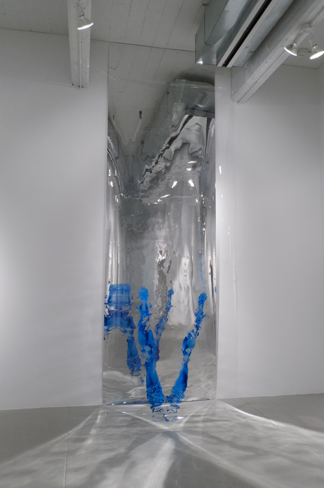

Berlin Childhood
Gasser and Grunert


DAAD

Berlin Biennale


Head Shots
Art and Public Geneva

Wooster Gardens

WWW
Wooster Gardens
Windows

Too Old for Toys Too Young for Boys


Evi Clowns
The Astrological Ways
Angel of History Film
Art Histories Salzburg


Berlin Memory Lab


Vienna Memory Lab


Body Imprints

Astrological Install


DiveVide

Rocks

Blue Lagoon


Lost Monuments


Real Sex

Remberti Traffic Circle


Richard Telles
DPR Telles Corner Cropped.jpgSt. Gallen

Tom Cugliani

The Wrapping Room